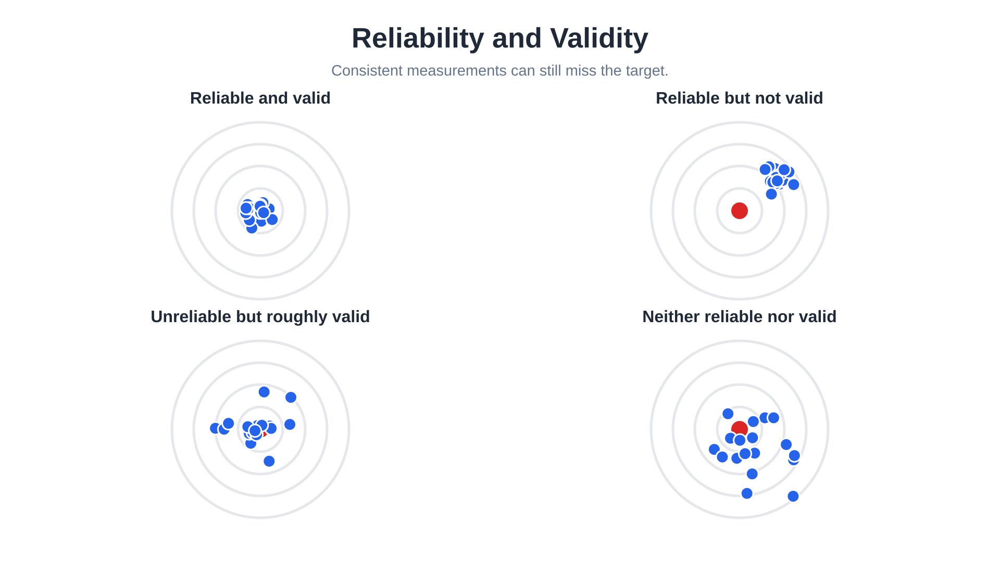
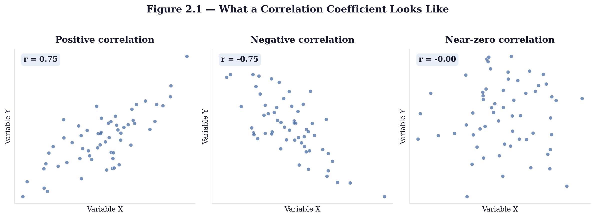
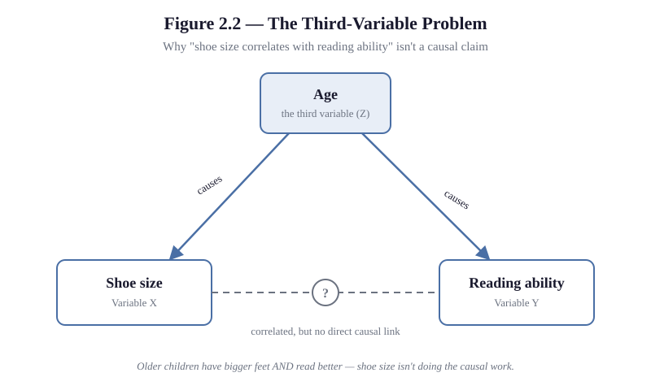
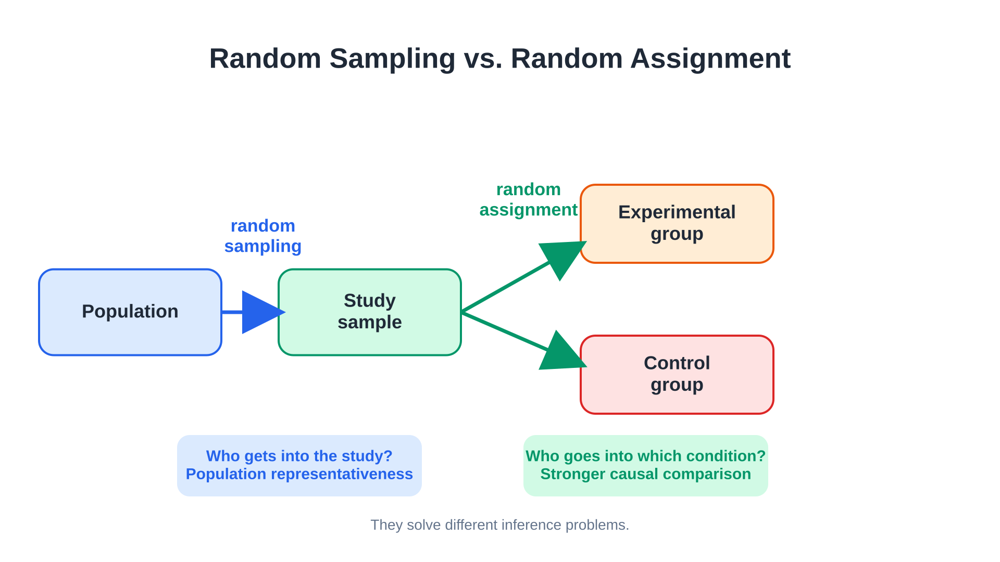
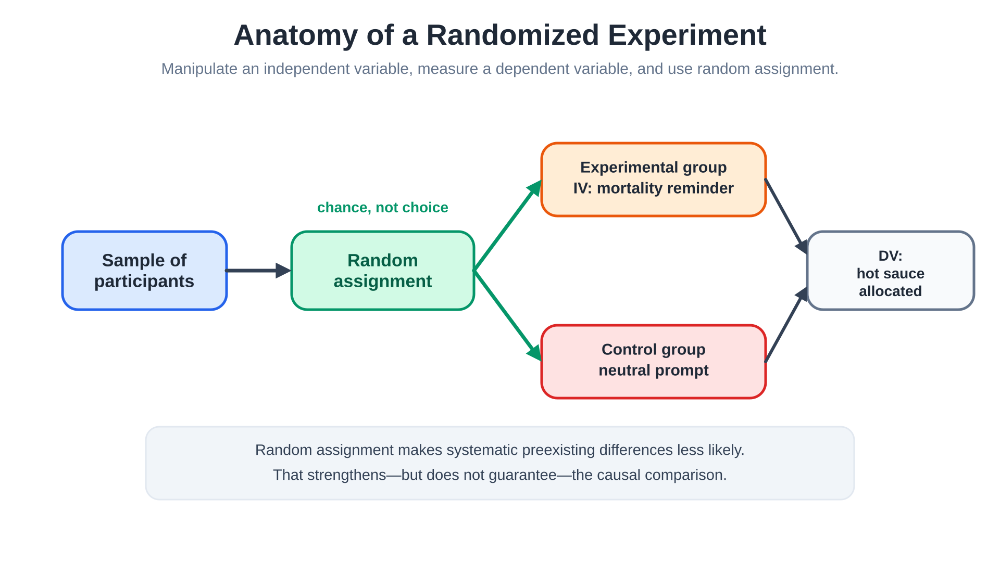
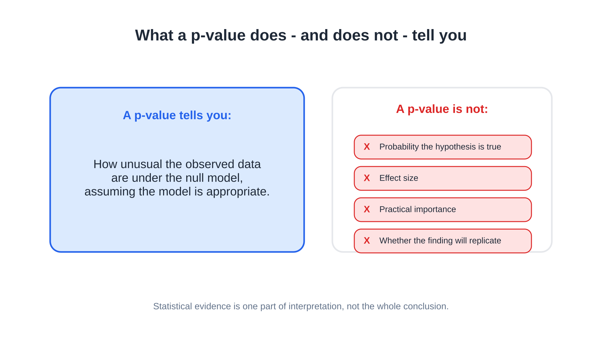

Research Methods and Statistics
It is hard not to believe this, at least some of the time: if two things are correlated, one of them must be causing the other.
News stories about psychology and health lean on this logic constantly: a study finds that people who do X also tend to have outcome Y, and the headline writes itself — X causes Y. Eat more chocolate, live longer. Spend more time on social media, get more depressed. Own more books as a child, score higher on intelligence tests as an adult.
Here is the problem: a correlation tells you that two things move together. It does not tell you which one, if either, is causing the other — or whether something else entirely is causing both. The childhood-books-and-intelligence correlation is real, and the honest story is more complicated than either the headline version or its easy debunking. Some of the effect likely reflects parental education and household income, which shape both how many books are in a house and a child's broader cognitive environment. But growing up with more books at home also predicts better adult literacy, numeracy, and technology skills even after accounting for parental and personal education (Sikora, Evans, & Kelley, 2019) — so the books may be doing some real work too, not just marking something else. What the correlation alone cannot tell you is how to separate those possibilities.
This is one of the most common reasoning errors in how the public — and, often, the media reporting on psychology — interprets behavioral science. The good news is that psychology has a well-developed toolkit for telling the difference between "these two things travel together" and "this one thing produces that one." That toolkit is what this chapter is about.
Where This Fits
Chapter 1 ended with a problem: common sense about behavior is unreliable, and even systematic science can go wrong — sometimes for years, as the replication crisis showed. This chapter is the resolution to that problem. It is the actual machinery — descriptive methods, correlational designs, true experiments, and the statistics that interpret all three — that lets psychology tell a good explanation from a comforting one. Nearly every finding referenced in every later chapter of this book rests on the logic developed here.
Learning Objectives
- Distinguish descriptive, correlational, and experimental research designs, and identify which kind of question each one can and cannot answer.
- Explain why correlation does not establish causation, and identify the third-variable problem in a real example.
- Distinguish reliability from validity when evaluating a measure, and apply both questions to a real operational definition.
- Distinguish internal validity from external validity, and identify which design feature — random assignment or random sampling — supports each.
- Identify the independent variable, dependent variable, and control condition in a described experiment.
- Explain what a p-value does and does not tell you, and explain why effect size and confidence intervals add information that significance alone does not (Theme 1: psychological science relies on empirical evidence and adapts as new evidence emerges).
- Evaluate a research claim — including an AI-generated one — for sampling bias, operational vagueness, and overstated certainty.
A Map Before the Details: The Research Cycle
Before the details accumulate, here is the shape of the whole chapter — not a ladder to climb toward some superior method, but a cycle: Observe → Define → Relate → Test → Estimate → Replicate → Revise. Descriptive work observes and turns up a question worth asking; operational definitions make that question measurable; correlational work relates variables to each other; experiments test whether one actually causes another; statistics estimate how large an effect is and how confidently you can say so; replication checks whether the finding survives contact with a new sample; and a result that doesn't survive — or that raises a sharper question than it answers — sends you back to Observe with something better to look for. None of this is a hierarchy with experiments at the top. Each method below answers a different kind of question, and — this is the part worth committing to memory before anything else — only one of them can establish that one thing causes another.
| Method | Main question it answers | Can it show causation? | Main strength | Main limitation | Common student mistake |
|---|---|---|---|---|---|
| Case study | What happened in this one, unusual case? | No | Rich detail; can reveal the unanticipated | Cannot show how common something is; no comparison group | Assuming one vivid case proves a general rule |
| Naturalistic observation | What does behavior look like in its normal setting? | No | High ecological validity | No control over competing explanations | Treating an observed pattern as an explanation |
| Survey | What do people report about their own attitudes or behavior? | No | Efficient; can reach large samples | Depends on accurate, honest self-report | Assuming self-report is automatically accurate |
| Correlation | Do two variables move together, and how strongly? | No | Can study relationships that cannot be ethically manipulated | Cannot rule out reverse causation or a third variable | Treating association as proof of cause |
| Experiment | Does manipulating X change Y? | Yes | Random assignment supports causal inference | Some questions cannot ethically or practically be manipulated | Assuming random assignment also guarantees a representative sample |
| Statistics | What can this sample tell us about the population, and how confident should we be? | — (a tool for analyzing data, not a way of collecting it) | Quantifies uncertainty | Easy to mistake for proof; cannot fix a flawed design | Treating "statistically significant" as "proven" or "important" |
| Replication | Does the finding hold up when someone else tries it? | — (a verification step, not a data-collection method) | Builds genuine confidence in a finding | Costly, time-consuming, and historically under-rewarded | Trusting a single study because it was well-designed |
Keep this table in view as you read. The first five rows are ways of collecting data — they map onto Observe, Relate, and Test in the cycle above; the last two are what you do once you have it — Estimate and Replicate. Confusing those two categories — treating "it was statistically significant" as if it were a research method in its own right — is itself a common source of confusion, which is exactly why it gets its own section later in this chapter.
Section 1: Asking Questions Without Touching the System
Long before I taught psychology, I spent time doing fieldwork in animal behavioral ecology — the kind of research where you do not get to manipulate anything. Some questions can only be answered by watching carefully and not interfering.
Psychology inherited a version of the same constraint. You cannot ethically or practically assign people to develop a childhood trauma, lose a spouse, or experience a manic episode in order to study the effects. For a wide range of psychological questions, the only available approach is to describe what is already happening, as precisely and systematically as possible. This is descriptive research, and it comes in a few standard forms.
The case study is an intensive examination of a single individual or small group, usually because the case is rare, extreme, or otherwise unusually informative — Phineas Gage's personality change after frontal lobe damage, discussed in Chapter 1, is a case study. Case studies generate rich detail and can reveal phenomena no one anticipated, but a single case cannot tell you how common something is, and there is no comparison group to rule out competing explanations.
Naturalistic observation means watching behavior unfold in its normal environment without interfering. The strength is ecological validity: you are watching the real thing. The weakness is the same one above — no control over competing explanations, so a pattern you notice cannot yet be explained.
The survey method asks large numbers of people to report on their own attitudes, experiences, or behavior. Surveys are efficient and can sample huge populations, but they depend entirely on people accurately knowing and honestly reporting their own internal states — a shakier assumption than it sounds. People misremember, round their answers toward what seems socially acceptable, and sometimes lack introspective access to the thing being asked about.
Descriptive methods are not merely what researchers use when they cannot run an experiment — they often determine what experiment should be run. A case study can reveal a phenomenon no one expected; naturalistic observation can show when and where it occurs; a survey can estimate how common it is and which experiences travel alongside it. When a similar pattern turns up across different samples and methods — what researchers call convergence — it becomes harder to dismiss as an accident, even though convergence still does not establish what caused it. Description frames the question. The methods in the rest of this chapter test the explanation.
Whatever the method, descriptive research depends on a step that is easy to skip and expensive to skip badly: the operational definition — a precise, measurable specification of exactly what you mean by a concept. "Aggression" is not a usable scientific variable until you decide it means something concrete and measurable. Without that translation step, you cannot collect data, because you do not yet know what to count.
Before reading further — what is the key limitation that case studies, naturalistic observation, and surveys all share, even though they differ in method?
Two More Questions Every Measure Has to Answer
Writing down an operational definition is not the end of the job. Once a concept has been translated into something measurable, two further questions decide whether the measurement is any good.
Reliability is whether a measure produces consistent results. If you measured the same thing again, under the same conditions, would you get roughly the same answer?
Validity is whether a measure actually captures the concept it claims to capture, rather than something else that happens to be easier to measure.
These are different questions, and a measure can pass one while failing the other. A bathroom scale that reads three pounds heavy every time is perfectly reliable — consistent — but not a valid measure of your true weight. A measure can also be unreliable (bouncing around unpredictably) while still being, in principle, an appropriate way to capture the concept. Reliability without validity is consistent measurement of the wrong thing. Validity without reliability is measuring the right thing too inconsistently to trust any single reading.
A psychology-specific version of the same gap: a depression questionnaire could be highly reliable — a student gets nearly the same score every time they take it — while still being a questionable measure of depression if what it is actually tracking is sleep loss or fatigue, which have plenty of causes besides depression. Reliable scores do not guarantee you are measuring the thing you think you are measuring.

We will put both questions to work directly in Section 3, on a real, named measure.
Operationalizing a concept precisely enough to measure it is not just a research skill — it is the same move you have to make any time you ask an AI tool for something useful. "Write me something good" gets you nothing testable; "summarize the three main arguments in this article in under 100 words" gets you something you can evaluate. Specifying what you actually want, precisely enough to check whether you got it, is the same underlying skill in both places.
Section 2: The Trap of "Together Means Together"
Descriptive methods tell you what is happening. The next step is asking whether two things happen together in a reliable way — which is where this chapter's opening misconception lives.
A correlation describes the degree to which two variables change together. The correlation coefficient (symbolized r) ranges from −1.00 to +1.00. A positive correlation means the variables move in the same direction; a negative correlation means they move in opposite directions. The magnitude tells you how tight the relationship is; the sign tells you the direction. A correlation near 0 means the variables show little or no linear relationship — a strong nonlinear pattern (for instance, a relationship that rises then falls) can still produce an r near zero, since r specifically measures straight-line association.

Correlational research has a genuine strength: it can study relationships that cannot ethically or practically be created in a lab. Nobody is going to randomly assign infants to neglectful versus attentive caregiving to study attachment, so what we know about attachment and later relationship functioning comes substantially from correlational work, with appropriate caveats.
Those caveats matter, because correlational data alone cannot establish what is causing what.
Do Not Confuse: Correlation vs. Causation
Children's shoe size and reading ability are positively correlated — kids with bigger feet tend to read better. Bigger feet do not improve reading comprehension. Both shoe size and reading ability increase with age, which is doing the actual causal work. Age is a third variable — something correlated with both measured variables that produces the appearance of a direct relationship where none exists.
There are three possible explanations any time X correlates with Y: X causes Y, Y causes X, or a third variable causes both. Correlational data alone cannot distinguish among these.

Diagnostic question: A study finds that teenagers who play more violent video games report more aggressive behavior. A news article concludes that violent games cause aggression. What is at least one alternative explanation the article is ignoring? (Reverse causation — already-aggressive teens may be drawn to violent games — or a third variable, such as family conflict or impulsivity, independently increasing both.)
Try it yourself: the Correlation vs. Causation Classifier lets you practice sorting real headlines by whether they show direction, a third variable, or a genuine causal claim — a hands-on way to catch the pattern before it shows up again in a news feed.
Two further problems concern who ends up in your sample.
Random sampling means every member of the population you are studying has an equal chance of being selected. This is what supports external validity — confidence that a sample's results generalize to the broader population. True random sampling is difficult and expensive, which is part of why so much psychology research has historically relied on whoever was willing and available. This pattern has been influentially summarized as the WEIRD problem: a large share of psychology's research base draws from people who are Western, Educated, Industrialized, Rich, and Democratic — a narrow and unusual slice of humanity to generalize claims about "human" behavior from (Henrich, Heine, & Norenzayan, 2010).
This connects to volunteer bias (sometimes called sampling bias more broadly): the systematic difference between people who agree to participate in research and the population a researcher actually wants to draw conclusions about. People who volunteer for psychology studies are not a random slice of the population — they differ in personality, motivation, and circumstance from people who do not volunteer, a pattern documented across decades of methodological research (Rosenthal & Rosnow, 1975) and still relevant to how findings should be read today (Chance & Rossman, 2026; Mehl, 2026).
A large language model's training data has a version of this same problem — it overrepresents recent English-language internet text and the people who had the time, access, and inclination to write it, which is a different population than "everything any human has ever known." Sampling bias and training-data bias are the same underlying shape: who ends up in the data determines what conclusions the data can support.
Random sampling supports external validity. Section 3 introduces random assignment, which supports a different kind of validity. Before reading on — what do you think the difference is?
Section 3: Experiments and Causal Claims
Correlational research can tell you that two things are related. Only one method can tell you that one thing causes another: the experiment.
An experiment works by deliberately manipulating one variable and measuring its effect on another, while holding everything else as constant as possible. The variable the researcher manipulates is the independent variable (IV) — the suspected cause. The variable the researcher measures afterward is the dependent variable (DV) — the suspected effect. Participants who receive the manipulation make up the experimental group; the control group is the comparison condition evaluated against it — sometimes participants who receive no manipulation at all, sometimes participants who receive a placebo or an alternative treatment, whichever gives the researcher the baseline the question requires.
The feature that separates a true experiment from a correlational study is random assignment: participants are assigned to conditions entirely by chance, not by any characteristic of their own. If assignment is truly random, the experimental and control groups should be equivalent, on average, on every variable except the one the researcher deliberately manipulated. Any outcome difference between the groups can then be attributed to the manipulation, provided the study is otherwise well-conducted and analyzed — randomization balances groups in expectation, but it does not by itself fix problems like uneven dropout between conditions or contamination between groups. This is what supports internal validity — confidence that the manipulation, and not some other factor, caused the observed difference.
Internal validity and external validity solve different problems at different stages of a study, even though both involve the word "random." Random sampling (Section 2) is about who gets into the study, and supports generalizing beyond it. Random assignment (here) is about how participants already in the study get divided, and supports a causal claim within it. A study can have one without the other — a perfectly randomized experiment run on an unrepresentative sample has strong internal validity and weak external validity, and vice versa.

Worked example: the hot sauce paradigm. The hot sauce allocation task was first used by McGregor and colleagues (1998) in terror-management research, testing whether reminding people of their own mortality increases aggression toward someone who threatens their cultural worldview. Participants who wrote about their own death, then encountered someone who criticized their political views, allocated more hot sauce to that person than participants who had written about a neutral topic. Lieberman and colleagues (1999) then formalized hot sauce allocation as a general laboratory measure of aggression, independent of the terror-management question that introduced it — establishing it as a reusable tool other researchers could apply to different questions, rather than a one-off solution.
The logic solves a real problem: "aggression" is not directly observable, and you cannot ethically let participants actually hurt each other. The operational definition is the amount of hot sauce a participant allocates to someone described as disliking spicy food, who will have to consume whatever is given. Working through the design: the IV is whichever manipulation varies between groups — for instance, a mortality reminder versus a neutral prompt. The DV is the amount of hot sauce allocated. The control group receives the neutral prompt. Random assignment rules out the possibility that mortality-reminder participants were simply more aggressive people to begin with — supporting internal validity for the causal claim.
Now return to the two questions from Section 1. Is hot sauce allocation reliable? The question is whether the same participant, under matching conditions, would allocate a similar amount each time — a real empirical question researchers have tested directly, not something you can settle by inspecting the procedure alone. Is it valid? This is more contested. Allocating hot sauce to someone who dislikes spicy food plausibly captures willingness to cause discomfort, but a methodological critique of laboratory aggression paradigms has specifically questioned whether hot sauce allocation might instead reflect something adjacent to aggression — like indifference to wasting a condiment, or a norm violation that reads as transgressive without being aggressive in the way a punch or an insult is (Ritter & Eslea, 2005). This is not a flaw unique to this measure; it is the normal condition of operationalizing any psychological construct, and it is exactly why reliability and validity have to be asked as separate, ongoing questions rather than settled once and assumed forever after.

A researcher wants to know whether sleep deprivation increases hot sauce allocation. Participants are randomly assigned to either a full night's sleep or a sleep-restricted night, then complete the hot sauce task the next day. Identify the IV, the DV, and what random assignment is ruling out in this design.
Section 4: Bias Controls and Research Ethics
A randomized design rules out preexisting differences between groups, but two further sources of bias can still distort a clean experiment, and a separate set of ethical obligations constrains the whole enterprise regardless of how clean the design is.
A placebo is an inactive treatment given to a control group so researchers can separate the effect of the actual treatment from the effect of believing you received treatment. The placebo effect itself is real but smaller and less universal than its popular reputation: an influential 1955 paper claimed roughly a third of patients improve on placebo alone (Beecher, 1955), but more rigorous later reviews comparing placebo against no treatment at all found little to no effect on objective outcomes, with a modest and inconsistent effect mainly on subjective, self-reported ones (Hróbjartsson & Gøtzsche, 2001, 2010). Treat that contrast itself as a small case study in this chapter's argument: a single influential finding is not the same as a finding that has held up.
One well-designed study makes the same point more concretely, and adds a distinction worth keeping separate. Wechsler and colleagues (2011) randomly assigned asthma patients to an active albuterol inhaler, a placebo inhaler, sham acupuncture, or no intervention, then measured both objective lung function (forced expiratory volume, FEV₁) and patients' own reported improvement. Only albuterol improved objective lung function — about 20%, versus roughly 7% for the other three conditions. But on self-reported improvement, albuterol, the placebo inhaler, and sham acupuncture were statistically indistinguishable from each other — about 50%, 45%, and 46% — and all three beat the no-intervention control's 21%. This separates the placebo response (everything that changes in a placebo group: expectation, natural recovery, reporting habits, and any genuine placebo effect, all mixed together) from the placebo effect specifically (the increment over no treatment at all) — which is why a no-intervention arm, not just a placebo arm, is what a study needs to isolate it. Patients here experienced real relief from the placebo conditions. Their airways did not actually open. Both of those things are true at once, and only the four-way comparison design tells you which one you are looking at. (This was a small pilot study — 46 patients randomized, 39 completed — so treat the specific numbers as illustrating the pattern rather than as a large, precisely estimated finding.)
The double-blind procedure goes a step further: neither the participant nor the researcher interacting with them knows who is in which group. This guards against participants behaving differently because they know what they are "supposed" to feel, and against researchers unconsciously treating groups differently. That second risk is not hypothetical — it is named directly after a horse. Clever Hans appeared to solve arithmetic by tapping a hoof, until investigation revealed he was reading unconscious postural cues from his questioner, who unknowingly signaled the correct answer (Pfungst, 1965/1911). Blinding exists because researchers are not immune to doing the human equivalent without realizing it — a direct descendant of the confirmation bias discussed in Chapter 1.
Running any experiment on human participants also carries an ethical obligation that constrains every design choice above, regardless of how methodologically clean it is.
| Safeguard | What it protects against |
|---|---|
| Informed consent | Participants agreeing to take part without understanding what the study involves or what risks are reasonably foreseeable |
| IRB review | Researchers being the sole judge of whether their own study is ethically acceptable |
| Belmont principles (respect for persons, beneficence, justice) | Research that treats participants as a means to an end, ignores risk/benefit balance, or unfairly selects vulnerable populations |
| Debriefing | Participants leaving a study deceived, confused, or distressed without explanation |
Informed consent means participants are told, before agreeing to take part, what the study involves and what risks are reasonably foreseeable. At colleges, universities, hospitals, and other research institutions, research involving human participants is normally submitted for Institutional Review Board (IRB) review before it begins — not because researchers cannot be trusted, but because an independent body, rather than the research team itself, is positioned to evaluate the design objectively. Some minimal-risk projects may qualify for an exempt or expedited review rather than full review, but the underlying principle holds regardless: researchers do not simply decide for themselves that a human-subjects study is ethically acceptable. Mandatory IRB review in the United States traces legally to the National Research Act of 1974, passed after historical research abuses — including the Tuskegee syphilis study — that informed consent, on paper, had not prevented. The Belmont Report then articulated the ethical framework IRBs still apply today: respect for persons, beneficence, and justice (National Commission for the Protection of Human Subjects, 1979). The Act created the oversight requirement; Belmont supplied the principles behind it.
The hot sauce paradigm itself typically involves mild deception — participants are not always told the study concerns aggression, since knowing the real purpose would change how they behave — which is why a full debriefing, explaining the study's actual purpose and confirming no one was harmed, is a required part of the procedure once data collection ends.
Imagine you are an IRB member reviewing the hot sauce study design before it could run. What is the actual risk to participants, and why might a reviewer judge it acceptable despite the deception involved?
Section 5: Knowing What to Believe — Statistics, Significance, and Replication
A finished experiment produces a pile of numbers, and two different jobs need to be done with them. Descriptive statistics summarize and organize a data set — the mean, the standard deviation, a percentage. They describe this sample. Inferential statistics use sample data to draw conclusions about the larger population the sample was drawn from, and to estimate how likely an observed result is to have occurred by chance.
The most commonly reported inferential result in psychology is statistical significance, usually reported as a p-value. A p-value tells us how incompatible the observed data are with a specified null model — typically, the assumption that no real effect exists — assuming that model and its underlying assumptions are appropriate (Wasserstein & Lazar, 2016). That is a precise and limited claim. A p-value does not tell you the probability that your hypothesis is true, the probability the finding is real, the size of the effect, or whether the finding will replicate. Conventionally, p < .05 is treated as the threshold for "significant" — meaning that if there were truly no effect, a result this extreme would occur by chance less than 5% of the time.

This distinction underlies two kinds of mistakes a researcher can make. A Type I error is concluding an effect exists when it does not — a false positive. A Type II error is concluding no effect exists when one actually does — a false negative (Neyman & Pearson, 1933). Every significance threshold is a deliberate trade-off between these two risks: holding the sample size and the study's statistical power fixed, demanding a smaller p-value to reduce Type I errors correspondingly increases the risk of Type II errors, and no single setting eliminates both. (Increasing power — for instance, by collecting a larger sample — can lower the Type II error rate without loosening the significance threshold at all.)
It is tempting to read "5% false-positive rate" as "5% of published findings are false," but that is not quite right either. Under ideal conditions, a .05 threshold means some null effects will appear significant by chance alone, simply because thousands of studies are run every year. In the real published literature, that baseline problem can be amplified by small sample sizes, unreported analyses that never make it into the paper, publication bias toward positive results, and a habit of treating "statistically significant" as more definitive than the term was ever meant to claim.
Beyond Significance: Effect Size and Confidence Intervals
A p-value answers one specific question — is this result unlikely under the null model? — and stops there. Two further questions matter just as much for deciding whether a finding is worth caring about.
Effect size asks how large the result actually is. Confidence intervals show the range of plausible values for the true effect, given the data and the statistical model used to analyze it — not certainty about a single number, but a calibrated range.
These matter because significance and size are not the same thing. A tiny, practically meaningless effect can reach statistical significance if the sample is large enough — with enough participants, almost any nonzero difference will eventually clear the p < .05 bar. Conversely, a real and meaningful effect can fail to reach significance in a small sample, simply because the study lacked the statistical power to detect it. A result's p-value, by itself, cannot tell you which of these situations you are looking at; effect size and confidence intervals can.
Deciding whether to trust an AI-generated claim involves a version of the same two-sided error problem as significance testing — this is an analogy, not a literal instance of hypothesis testing, since there is no formal null hypothesis or decision rule involved in reading a chatbot's answer. Accepting a fluent but false AI output as true functions like a Type I error; dismissing a correct AI output purely out of general skepticism functions like a Type II error. The real difference is calibration: a confidence interval at least tells you how precise an estimate is, under a stated statistical model, with a stated set of assumptions. A chatbot's fluent prose is not an uncertainty estimate — it tells you only that the model can produce fluent prose, with no equivalent signal attached for how likely the claim is to be correct.
Even a well-designed, significant, properly randomized single study is not the end of the story. Replication — repeating a study, ideally with a new sample, to see whether the result holds up — is what actually builds confidence in a finding, not any individual result. Chapter 1 introduced the replication crisis: beginning around 2011, systematic attempts to replicate published psychological findings revealed that a substantial number did not hold up (Open Science Collaboration, 2015). The methods in this chapter are not a guarantee against that outcome. Replication is the check on that risk — not any single design feature, however careful.
Has a study result you encountered outside of class — in the news, on social media, in a supplement or product claim — turned out, on a closer look, to rest on a single unreplicated study, a correlation reported as causation, or a sample too narrow to generalize from?
Chapter Summary
Psychology answers different kinds of questions with different methods, and matching the method to the question is the central skill of this chapter — summarized in the research-cycle table near the start. Descriptive methods describe what is happening but cannot identify causes, and depend on precise operational definitions to be usable at all. Once a concept is operationalized, it has to clear two further bars: reliability (consistency) and validity (actually capturing the intended concept), which are independent questions a measure can pass or fail separately.
Correlational research quantifies how strongly two variables move together but cannot distinguish among the three explanations for any correlation: X causes Y, Y causes X, or a third variable causes both. Random sampling supports external validity — generalizing beyond the sample — while volunteer bias and the broader WEIRD-sample problem can undermine it even in well-analyzed studies.
Only the true experiment can establish causation, through manipulation of an independent variable, measurement of a dependent variable, and random assignment, which supports internal validity by ruling out competing explanations. Placebo controls and double-blind procedures close off two further sources of bias. None of this is optional ethically: informed consent, IRB review, and debriefing after any deception are required safeguards grounded in real historical failures to protect research participants.
Once data exist, descriptive statistics summarize the sample, and inferential statistics estimate what it tells you about the population — most visibly through statistical significance, a narrow claim about the probability of the data under a null model, not a measure of a finding's size, importance, or truth. Effect size and confidence intervals answer the questions a p-value cannot: how large is this, and how precisely do we know it? Because any individual study carries some chance of error, replication — not any single result — is what ultimately earns a finding scientific trust.
Connections
| Concept from this chapter | Reappears in | Why it matters there |
|---|---|---|
| Correlation vs. causation / third-variable problem | Ch. 11 — Social Psychology | Classic correlational findings on media violence and aggression are exactly the kind of result this chapter teaches you to interrogate before accepting a causal story |
| Hot sauce paradigm / experimental aggression manipulation | Ch. 11 — Social Psychology | The same operationalization problem — how to measure aggression without anyone getting hurt — recurs throughout the social psychology literature on frustration and aggression |
| Reliability and validity | Ch. 9 — Thinking, Language & Intelligence | IQ test standardization is the clearest applied case of these two questions — a test can be highly reliable while its validity as a measure of "intelligence" remains genuinely contested |
| Placebo effect | Ch. 13 — Psychological Disorders & Therapy | Every claim about a treatment's effectiveness, including psychotherapy and medication, has to be evaluated against a placebo-controlled comparison to mean anything |
| Volunteer bias / WEIRD samples | Ch. 10 — Lifespan Development | Longitudinal studies lose participants non-randomly over years of follow-up, which can quietly bias conclusions about how people change across the lifespan |
| Effect size and statistical significance | Ch. 7 — Learning | Effect sizes in reinforcement-schedule research, not significance alone, determine which findings about what actually strengthens behavior get taken seriously |
| Double-blind procedure / observer-expectancy effects | Ch. 1 — History & Approaches | This method exists specifically to guard against the confirmation bias discussed in Chapter 1 — Clever Hans is confirmation bias with hooves |
| Replication | Ch. 1 — History & Approaches | Chapter 1 introduced the replication crisis as evidence the field is self-correcting; this chapter explains the statistical reason any single study needs that check |
Review Questions
1. A researcher finds that people who own more houseplants report lower stress levels. Which is the most accurate interpretation?
Show answer & rationale
Answer: c. Why (a) and (b) are tempting: both are possible, but so is a third variable (income, free time, life stability) influencing both — the data alone cannot adjudicate. (d) overcorrects; correlational findings are genuinely useful for relationships that cannot be experimentally manipulated.
2. Which method would be most appropriate for studying how children naturally resolve conflicts during unstructured play, preserving authentic behavior?
Show answer & rationale
Answer: c. (a) risks disrupting the behavior under study; (b) cannot establish how children in general behave; (d) is not a real method — "double-blind" applies to experiments, not surveys.
3. A researcher develops a new questionnaire to measure "test anxiety." Students who retake the questionnaire a week later get nearly identical scores each time, but follow-up interviews suggest the questionnaire is actually capturing general nervousness rather than anything specific to testing. This measure is:
Show answer & rationale
Answer: a. Why (b) is tempting: it reverses the two terms — consistent scores across retakes is the definition of reliability, not validity; the interview finding is what calls validity into question here.
4. In an experiment testing whether a new study technique improves test scores, the independent variable is:
Show answer & rationale
Answer: b. Test scores are measured in this study, which makes them the dependent variable — the outcome — not the manipulated variable.
5. Random assignment primarily supports which kind of validity, and why?
Show answer & rationale
Answer: b. Why (a) is tempting: representativeness is the job of random sampling (external validity), a related but distinct concept — random assignment addresses causal inference within the study (internal validity), not generalizability beyond it.
6. A study gives one group a real pill and another a sugar pill, with neither participants nor administering researchers told which is which. This design controls for:
Show answer & rationale
Answer: b. The placebo control alone addresses participant expectation; the "double" in double-blind specifically adds protection against researcher-side bias — the Clever Hans problem — that a single-blind design would not catch.
7. Which statement most accurately describes the role of IRB review?
Show answer & rationale
Answer: b. Why (a) is tempting: it overstates the rule — not every study requires the same intensity of review, but the underlying principle (researchers do not self-certify) holds in every case.
8. A p-value of .03 for a study result means:
Show answer & rationale
Answer: c. (a) is the single most common misinterpretation of a p-value — it is not a statement about the probability the hypothesis is true.
9. A study finds a statistically significant effect (p < .05) in a sample of 50,000 participants, but the effect size is extremely small. The most accurate conclusion is:
Show answer & rationale
Answer: b. Why (c) is tempting: it is possible, but not the most accurate conclusion — a tiny, statistically significant effect in a huge sample is exactly the expected, unremarkable outcome of how significance testing interacts with sample size, not necessarily evidence of an error.
10. A psychology study recruits participants entirely from introductory psychology students at one university. The most accurate criticism of this sample is that it:
Show answer & rationale
Answer: c. Why (b) is tempting: random assignment concerns how participants are divided into groups once recruited, not who gets recruited in the first place — this sample's problem is at the recruitment stage.
11. You ask an AI assistant a factual question and receive a fluent, confident answer that happens to be wrong. Accepting it without checking is most analogous to which statistical error?
Show answer & rationale
Answer: a. (b) is the opposite mistake — dismissing a correct AI output purely out of general skepticism is the Type II version of the same underlying calibration problem.
12. Why does a single well-designed, statistically significant study not, by itself, establish that a finding will replicate?
Show answer & rationale
Answer: a. (d) is wrong: experiments are less vulnerable to some confounds than correlational studies, but they are not immune to the basic statistical fact that any threshold permits some false positives — replication matters for both.
Key Terms
- Case study
- An intensive examination of a single individual or small group, useful for rare or unusually informative cases but unable to establish how common a phenomenon is or to rule out alternative explanations.
- Confidence interval
- A range of plausible values for a true population effect, given the data and the statistical model used to estimate it.
- Control group
- The comparison condition in an experiment against which the experimental condition is evaluated; depending on the design, this may mean no manipulation at all, a placebo, or an alternative treatment.
- Convergence
- When descriptive research turns up a similar pattern across different samples, methods, or contexts; convergence makes a phenomenon harder to dismiss as an accident, but does not by itself establish what causes it.
- Correlation coefficient
- A statistic, ranging from −1.00 to +1.00, describing the strength and direction of the relationship between two variables.
- Dependent variable (DV)
- The variable measured in an experiment; the presumed effect.
- Double-blind procedure
- A design in which neither participants nor the researchers interacting with them know who is in which condition.
- Effect size
- A quantitative measure of how large a result is, independent of whether it reaches statistical significance.
- External validity
- The degree to which a study's results generalize beyond the specific sample studied; supported by random sampling.
- Independent variable (IV)
- The variable deliberately manipulated by the researcher; the presumed cause.
- Informed consent
- The ethical requirement that participants be told, in advance, what a study involves and what risks are reasonably foreseeable.
- Institutional Review Board (IRB)
- An independent committee that reviews proposed research involving human participants before it begins.
- Internal validity
- The degree to which a study supports the conclusion that the manipulation, rather than some other factor, caused the observed effect; supported by random assignment.
- Naturalistic observation
- Watching and recording behavior as it occurs in its normal environment, without interference.
- Operational definition
- A precise, measurable specification of exactly what a researcher means by a concept.
- Placebo / placebo effect
- An inactive treatment given to a control group; the placebo effect is improvement caused by the expectation of treatment, real but more modest and inconsistent than commonly believed.
- Placebo response
- Everything that changes in a group receiving a placebo, including natural recovery, altered reporting, and any genuine placebo effect, all combined; isolating the placebo effect specifically requires comparing against a no-treatment control.
- Random assignment
- Assigning participants to conditions purely by chance, supporting internal validity.
- Random sampling
- Selecting participants such that every member of the population has an equal chance of being chosen, supporting external validity.
- Reliability
- The consistency of a measure: whether it produces similar results under similar conditions.
- Replication
- Repeating a study, ideally with a new sample, to determine whether a finding holds up.
- Statistical significance
- A finding's estimated improbability under a specified null model, commonly reported as a p-value; not a measure of a finding's size, importance, or truth.
- Third-variable problem
- The possibility that an observed correlation is produced by a separate variable influencing both measured variables, rather than either causing the other.
- Type I error
- Concluding an effect exists when it does not; a false positive.
- Type II error
- Concluding an effect does not exist when it does; a false negative.
- Validity
- Whether a measure actually captures the concept it claims to capture.
- Volunteer bias / sampling bias
- The systematic difference between people who agree to participate in research and the broader population a researcher wants to draw conclusions about.
Further Reading
Noba Project — Statistical Thinking (Chance & Rossman)
https://nobaproject.com/modules/statistical-thinking
Open-access treatment of sampling, distributions, and inferential logic, with more statistical depth than this chapter provides.
Noba Project — Conducting Psychology Research in the Real World (Mehl)
https://nobaproject.com/modules/conducting-psychology-research-in-the-real-world
Covers ecological validity and real-world methodological tradeoffs not fully developed here.
HHS Office for Human Research Protections — The Belmont Report
https://www.hhs.gov/ohrp/regulations-and-policy/belmont-report/read-the-belmont-report/index.html
The original 1979 document establishing the ethical framework behind modern IRB review; short and readable.
The American Statistical Association's Statement on p-Values (Wasserstein & Lazar, 2016)
https://doi.org/10.1080/00031305.2016.1154108
A short, authoritative, and surprisingly readable corrective to the most common misinterpretations of statistical significance — written for exactly this purpose.
Open Science Collaboration. (2015). Estimating the reproducibility of psychological science.
Science, 349(6251), aac4716.
The replication-crisis paper introduced in Chapter 1; directly relevant to this chapter's discussion of why any single significant result is not the end of the story.
Hróbjartsson & Gøtzsche (2001, 2010) — Is the placebo powerless? / Placebo interventions for all clinical conditions.
New England Journal of Medicine, 344(21), 1594–1602; Cochrane Database of Systematic Reviews, CD003974.
The systematic reanalysis (and later Cochrane update) that substantially revised the popular understanding of placebo effects — a good case study in this chapter's own lesson about not trusting a single influential finding without replication.
Sikora, Evans, & Kelley (2019). Scholarly culture: How books in adolescence enhance adult literacy, numeracy and technology skills in 31 societies.
Social Science Research, 77, 1–15.
The study behind this chapter's softened claim about childhood books and adult skills — useful for seeing how a real correlational literature handles confounds rather than just asserting "correlation isn't causation" in the abstract.
References
Full citations for factual claims made in this chapter, for instructors or students who want to verify or go deeper. Distinct from Further Reading above, which is curated for student exploration rather than completeness.
Beecher, H. K. (1955). The powerful placebo. JAMA, 159(17), 1602–1606. https://doi.org/10.1001/jama.1955.02960340022006
Chance, B., & Rossman, A. (2026). Statistical thinking. In R. Biswas-Diener & E. Diener (Eds.), Noba textbook series: Psychology. DEF Publishers. https://nobaproject.com/modules/statistical-thinking
Henrich, J., Heine, S. J., & Norenzayan, A. (2010). The weirdest people in the world? Behavioral and Brain Sciences, 33(2–3), 61–83. https://doi.org/10.1017/S0140525X0999152X
Hróbjartsson, A., & Gøtzsche, P. C. (2001). Is the placebo powerless? An analysis of clinical trials comparing placebo with no treatment. New England Journal of Medicine, 344(21), 1594–1602. https://doi.org/10.1056/NEJM200105243442106
Hróbjartsson, A., & Gøtzsche, P. C. (2010). Placebo interventions for all clinical conditions. Cochrane Database of Systematic Reviews, Issue 1, Art. No. CD003974. https://doi.org/10.1002/14651858.CD003974.pub3
Lieberman, J. D., Solomon, S., Greenberg, J., & McGregor, H. A. (1999). A hot new way to measure aggression: Hot sauce allocation. Aggressive Behavior, 25(5), 331–348. https://doi.org/10.1002/(SICI)1098-2337(1999)25:5%3C331::AID-AB2%3E3.0.CO;2-1
McGregor, H. A., Lieberman, J. D., Greenberg, J., Solomon, S., Arndt, J., Simon, L., & Pyszczynski, T. (1998). Terror management and aggression: Evidence that mortality salience motivates aggression against worldview-threatening others. Journal of Personality and Social Psychology, 74(3), 590–605. https://doi.org/10.1037/0022-3514.74.3.590
Mehl, M. R. (2026). Conducting psychology research in the real world. In R. Biswas-Diener & E. Diener (Eds.), Noba textbook series: Psychology. DEF Publishers. https://nobaproject.com/modules/conducting-psychology-research-in-the-real-world
National Commission for the Protection of Human Subjects of Biomedical and Behavioral Research. (1979). The Belmont Report: Ethical principles and guidelines for the protection of human subjects of research. U.S. Department of Health, Education, and Welfare.
Neyman, J., & Pearson, E. S. (1933). On the problem of the most efficient tests of statistical hypotheses. Philosophical Transactions of the Royal Society A, 231(694–706), 289–337. https://doi.org/10.1098/rsta.1933.0009
Open Science Collaboration. (2015). Estimating the reproducibility of psychological science. Science, 349(6251), aac4716. https://doi.org/10.1126/science.aac4716
Pfungst, O. (1965). Clever Hans: The horse of Mr. von Osten (C. L. Rahn, Trans.; R. Rosenthal, Ed.). Holt, Rinehart and Winston. (Original work published 1911)
Ritter, D., & Eslea, M. (2005). Hot sauce, toy guns, and graffiti: A critical account of current laboratory aggression paradigms. Aggressive Behavior, 31(5), 407–419. https://doi.org/10.1002/ab.20066
Rosenthal, R., & Rosnow, R. L. (1975). The volunteer subject. Wiley.
Sikora, J., Evans, M. D. R., & Kelley, J. (2019). Scholarly culture: How books in adolescence enhance adult literacy, numeracy and technology skills in 31 societies. Social Science Research, 77, 1–15. https://doi.org/10.1016/j.ssresearch.2018.10.003
Wasserstein, R. L., & Lazar, N. A. (2016). The ASA's statement on p-values: Context, process, and purpose. The American Statistician, 70(2), 129–133. https://doi.org/10.1080/00031305.2016.1154108
Wechsler, M. E., Kelley, J. M., Boyd, I. O., Dutile, S., Marigowda, G., Kirsch, I., Israel, E., & Kaptchuk, T. J. (2011). Active albuterol or placebo, sham acupuncture, or no intervention in asthma. New England Journal of Medicine, 365(2), 119–126. https://doi.org/10.1056/NEJMoa1103319
Note on verification: DOIs above were checked against publisher/Crossref/PubMed records during drafting. The Ritter & Eslea (2005) author order is confirmed via Crossref metadata. The Noba module citation year (2026) is the date these citations were drawn from the module, not a fixed publication edition — Noba modules are living documents that Noba may revise after this date; this is the deliberate convention for citing them, not an open question. The Sikora et al. (2019) DOI was corrected via Crossref title search after a search-engine-reported DOI resolved to an unrelated paper — a reminder that a search-engine DOI is a claim, not a fact, until checked against the registry.